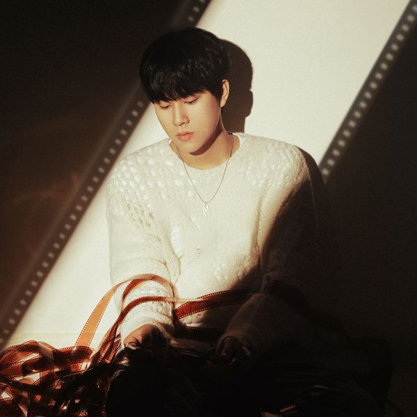

안녕하세요 한스입니다.
많은 인재가 모여든다는 서울예술대학에서도 이무진은 튈정도로 이무진의 목소리는 정말 특색이 있고 캐릭터 있는 재능있는 가수입니다. 오늘은 이무진의 노래 에피소드를 소개해드리겠습니다.
이무진 에피소드 MV
이 뮤비의 내용은 전자기기 수리점에서 일하는 주인공이 수리를 의뢰하는 여러 사람의 이야기들과 이제는 한 편의 에피소드가 되어버린 자신의 연애이야기의 시작과 에필로그까지의 서사를 담고 있습니다. 누구에게나 가지고 있을 수 있는 소중한 이야기가 이젠 하나의 에피소드가 되어버린 쌉쌀한 기억을 이무진만의 특색 있는 목소리로 잘 담아냈습니다.
이무진 에피소드 가사
나는 말야, 버릇이 하나
있어, 그건 매일 잠에 들 시간마다
잘 모아둔 기억 조각들 중
잡히는 걸 집은 후 혼자 조용히 꼬꼬무
이걸 난 궁상이란
이름으로 지었어, 고민, 고민하다가
아무튼, 뭐, 오늘은 하필이면
너가 스쳐버려서 우리였을 때로
우리 정말 좋았던 그때로
우리의 에피소드가 찬란하게 막을 연다
배경은 너의 집 앞, 첫 데이트가 끝난
둘만의 에피소드가 참 예쁜 얘기로 시작
자작자작, 조심스런 대화, 그새 늦은 시간
굿바이, 좋은 뜻일 뿐인 굿바이
With a happy smile, 이게 이 스토리의 서막
눈 내리던 그 밤, 겨울 향이 배어서 더 눈부신
우리의 에피소드다
매일이 마지막인 듯이, 함께라면 어디든지
사랑이란 걸 끝도 없이 주고받고 나눴어, 그치?
서로만 있음 마음이 시릴 날이 없던 우리
넌 오아시스 내겐 마치
근데 있잖아, 별 소용없다?
생각만 해도 행복한 순간들은 말야
모른 척해도 결국엔 이건 끝을 봤던 에피소드
점점, 점점, 점점
우리의 에피소드가 결말에 가까워져가
곧 새드 엔딩이다, 크레딧엔 너와 나
둘만의 에피소드가 참 쓸쓸한 끝을 맞아
두 주인공의 서글픈 마지막, 결국 건넨 인사
굿바이, 너무 아픈 이별의 굿바이
눈물이 뺨을 스쳐 도착한 입가엔 미소
애써 웃고 있어, 우린 서로를 보며
첨 같던 미소로 안녕, 웃으며 안녕
눈 뜨면 에필로그다, 침대에 기대어 혼자
펑펑 울고 있는 나, 이 궁상 밖의 난
둘만의 에피소드완 전혀 다른 모습, 난 그날
돌아서지 말았어야 했다, 널 안았어야 했다
그 밤, 눈꽃이 널 덮은 그 밤의 향을 잊음과
함께 잃었던 따스함, 춥게 눈을 뜬다
겨울밤이 되어서 맞이한 향이
우리의 에피소드다
이무진 에피소드 앨범 커버

함께 들으면 좋을 노래 - 이무진 잠깐 시간 될까
에피소드보다 먼저 발표된 곡으로 역시 이무진의 캐릭터가 잘 담겨져 있습니다.